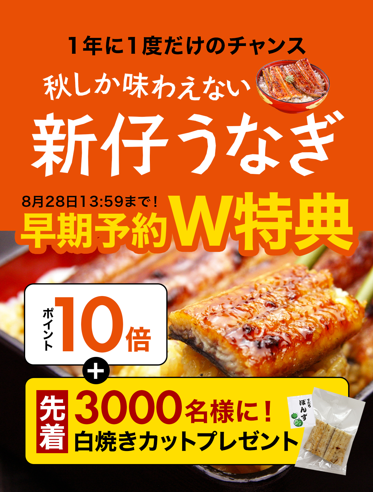
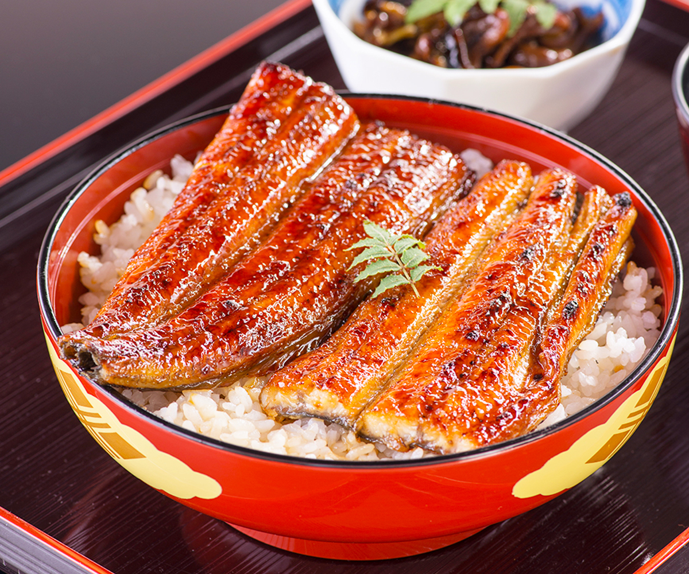
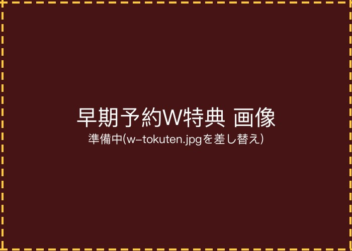
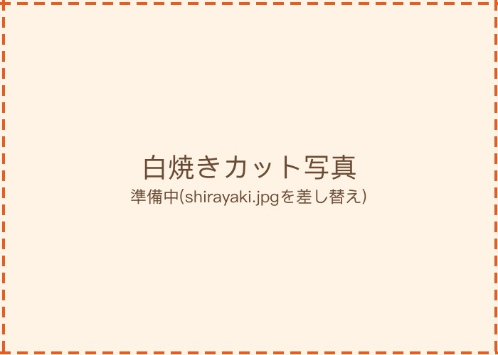
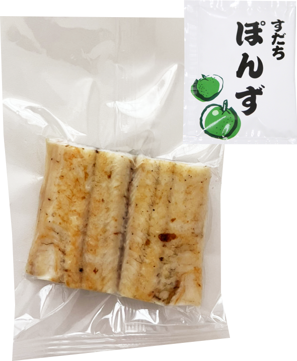

「新仔うなぎ」
とは?
うなぎの稚魚漁は毎年11月頃から始まり、その後約10か月かけて大切に育てられます。秋になる頃、十分に成長したうなぎが池上げされます。
このとき、養殖期間が1年以上のものを「ヒネ」、養殖期間が1年未満のものを「新仔うなぎ」と呼びます。
養殖期間 1年以上
ヒネ
じっくり育った、しっかりとした味わい
養殖期間 1年未満
新仔うなぎ
若いうなぎならではの、やわらかな味わい
新仔うなぎは、十分な大きさまで育ちながらも若いうなぎのため、身も皮もやわらかく、毎年秋だけしか味わえない貴重な存在です。
新仔うなぎが
美味しい理由

口に入れた瞬間、上質でジューシーな脂がふわっと広がり、舌の上でとろけるようなやわらかさ。毎年この季節を楽しみに待つ方も多い、秋限定の特別なうなぎです。
早期予約すると
さらにお得なW特典
8月7日14:00〜8月28日14:00の期間限定。早めのご予約で、ポイント10倍に加えて、先着3,000名様に国産うなぎ白焼きカット(自家製ぽんず付)をプレゼントします。

新仔うなぎを予約する白焼きカットプレゼントは先着3,000名様限定です
特典の白焼きについて

通常の蒲焼とは違い、タレを付けずに香ばしく焼き上げたのが「白焼き」。余計な味付けをしていないため、うなぎ本来の香り、旨み、上質な脂の甘みを、そのまま味わえます。
付属の自家製ぽんずでさっぱりと食べるのはもちろん、わさびや塩を添えていただくのもおすすめです。

「蒲焼しか食べたことがない」という方にも、ぜひ一度味わっていただきたい美味しさです。
秋だけの贅沢を
今年も食卓へ
年に一度、この季節だけ。希少な新仔うなぎを、早期予約特典付きでお届けします。
新仔うなぎ 早期予約キャンペーン
予約期間:8月7日14:00〜8月28日14:00
発送:9月7日以降 順次発送
ご注意事項
- 早期予約特典(ポイント10倍・白焼きカットプレゼント)の対象期間は8月7日14:00〜8月28日14:00です。
- 白焼きカット(自家製ぽんず付)のプレゼントは先着3,000名様限定です。上限に達し次第終了となります。
- 商品の発送は9月7日以降、順次となります。到着日をお約束するものではありません。
- 天候・水揚げ状況等により、内容や発送時期が変更になる場合があります。
- ご注文確認画面で特典が適用されていることをご確認ください。
- 販売状況により、商品が品切れとなる場合があります。
- 写真はイメージです。